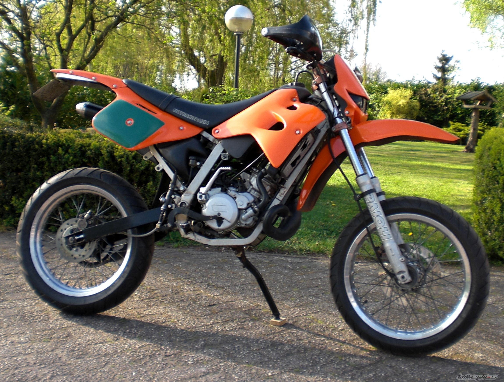
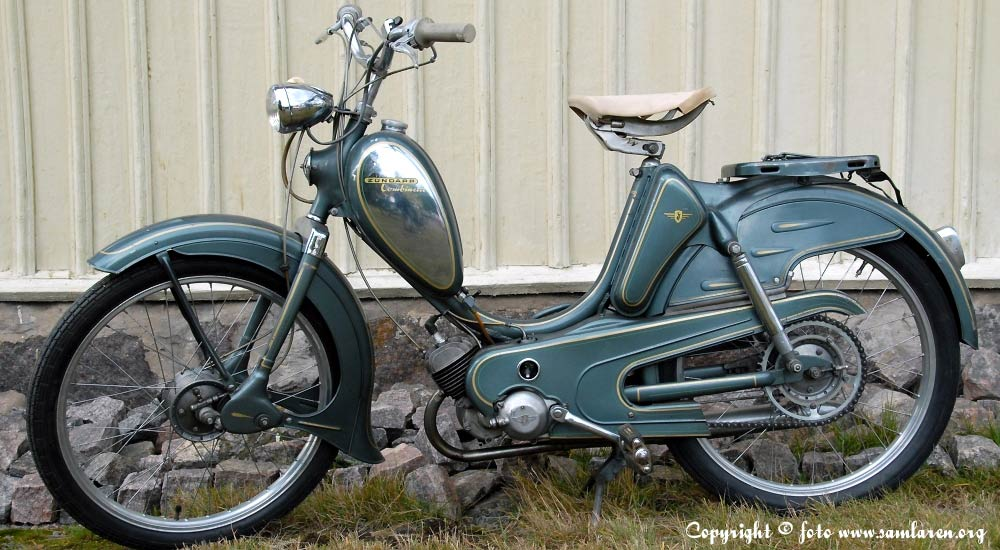

Bloggen
Motorhispania furia am6
Den mopeden jag gjort nått på senaste tiden är min motorhispania furia. Den har en am6 motor vilket jag bytt ut till en anan am6 motor. Det beror på att när jag körde med den gamla motorn så blev veven skev vilket gjorde att kolven gick. Jag testade att byta kolv för jag visste inte då att den va skev. Bytte kolven startade mopeden lät den stå en stund och så fort jag nudda gasen gick kolven igen. Sen ledde det till att veven satt bomfast och villeinte röra sig mer. Vilket var då jag bytte motor. Sen har jag även köpt några trimmdelaren av en kompis. De jag köpt är ett underliggandes turbokit med 70cc och en 24mm mikuni förgasare. Det som jag behövde köpa till dem delarna var en ny kopplingsvajer eftersom den som satt på blitt dålig så att kopplingen inte fungerar längre sen kortare fjädrar som håller fast avgassystemet till motorn och sen en ny kolv till cylindern. Det som är kvar nu att göra på mopeden är att byta kopplingsvajer fjädrar och cylinder med kolven så att 70cc sitter på.
2017/12/10
zundapp combinette 1956
Detta e en gammal moped som jag har fått av min morfar när jag var omkring 6 år gammal vilket var 2006. Moppen är mycket gammal och har fortfarnade trampar. Och för dem som inte visste det så kommer ordet moped från att man var tvungen o ha trampor då moped uppfans. De är inte alla som har koll på det men på att de e därifrån namnet kommer. När mopeden (i generelt) uppfans så var dem tvungna att ha trampor annars räknades dem som motorcyklar. De försvann ju förståss efter ett tag. Men om dem var först tvungna och ha trampor så de va i princip en cykel med motor. Och de var just då motorn och pedalerna som gjorde att de var en moped. Utan tramp pedalerna var det en motorcykel och utan motor e det en cykel. Då har man orden motor och pedaler. Då tar man dem två första bokstävenerna från motor och dem 3 första från pedaler så får man moped. Det är alltså därifrån namnet moped kommer ifrån
2017/12/3